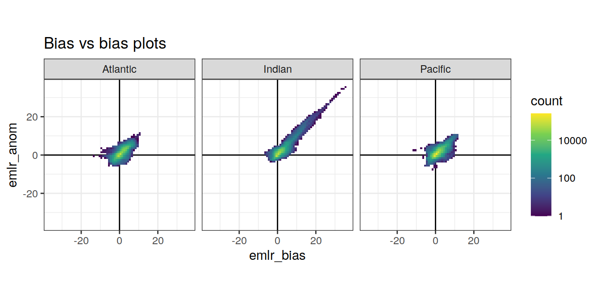
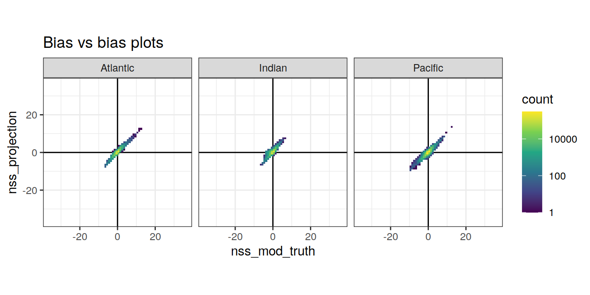
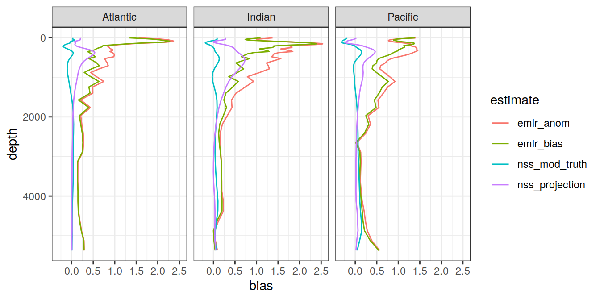

Analysis of cant estimates
Jens Daniel Müller
29 June, 2021
Last updated: 2021-06-29
Checks: 7 0
Knit directory: emlr_obs_v_XXX/
This reproducible R Markdown analysis was created with workflowr (version 1.6.2). The Checks tab describes the reproducibility checks that were applied when the results were created. The Past versions tab lists the development history.
Great! Since the R Markdown file has been committed to the Git repository, you know the exact version of the code that produced these results.
Great job! The global environment was empty. Objects defined in the global environment can affect the analysis in your R Markdown file in unknown ways. For reproduciblity it’s best to always run the code in an empty environment.
The command set.seed(20200707) was run prior to running the code in the R Markdown file. Setting a seed ensures that any results that rely on randomness, e.g. subsampling or permutations, are reproducible.
Great job! Recording the operating system, R version, and package versions is critical for reproducibility.
Nice! There were no cached chunks for this analysis, so you can be confident that you successfully produced the results during this run.
Great job! Using relative paths to the files within your workflowr project makes it easier to run your code on other machines.
Great! You are using Git for version control. Tracking code development and connecting the code version to the results is critical for reproducibility.
The results in this page were generated with repository version af271b5. See the Past versions tab to see a history of the changes made to the R Markdown and HTML files.
Note that you need to be careful to ensure that all relevant files for the analysis have been committed to Git prior to generating the results (you can use wflow_publish or wflow_git_commit). workflowr only checks the R Markdown file, but you know if there are other scripts or data files that it depends on. Below is the status of the Git repository when the results were generated:
Ignored files:
Ignored: .Rhistory
Ignored: .Rproj.user/
Unstaged changes:
Modified: code/Workflowr_project_managment.R
Note that any generated files, e.g. HTML, png, CSS, etc., are not included in this status report because it is ok for generated content to have uncommitted changes.
These are the previous versions of the repository in which changes were made to the R Markdown (analysis/analysis_anomalous_changes.Rmd) and HTML (docs/analysis_anomalous_changes.html) files. If you’ve configured a remote Git repository (see ?wflow_git_remote), click on the hyperlinks in the table below to view the files as they were in that past version.
| File | Version | Author | Date | Message |
|---|---|---|---|---|
| html | d054c39 | jens-daniel-mueller | 2021-06-24 | Build site. |
| html | 4fcd066 | jens-daniel-mueller | 2021-06-24 | Build site. |
| html | aedd245 | jens-daniel-mueller | 2021-06-23 | Build site. |
| Rmd | 31bffa7 | jens-daniel-mueller | 2021-06-23 | revised slab bias and write files |
| html | 00dcc97 | jens-daniel-mueller | 2021-06-23 | Build site. |
| Rmd | 891392a | jens-daniel-mueller | 2021-06-23 | revised bias labels |
| html | b1ddc9b | jens-daniel-mueller | 2021-06-18 | Build site. |
| Rmd | 0fb43db | jens-daniel-mueller | 2021-06-18 | write anomaly files |
| html | c0a1abb | jens-daniel-mueller | 2021-06-18 | Build site. |
| Rmd | e262f99 | jens-daniel-mueller | 2021-06-18 | revise observation anomalies |
| html | 9a8d446 | jens-daniel-mueller | 2021-06-18 | Build site. |
| Rmd | 0d50381 | jens-daniel-mueller | 2021-06-18 | revised bias label |
| html | 3b6387f | jens-daniel-mueller | 2021-06-18 | Build site. |
| html | e03e1ac | jens-daniel-mueller | 2021-06-16 | Build site. |
| Rmd | cdc534f | jens-daniel-mueller | 2021-06-16 | reverted nss sign |
| html | bf487c8 | jens-daniel-mueller | 2021-06-16 | Build site. |
| Rmd | 978e96e | jens-daniel-mueller | 2021-06-16 | non steady state changes added |
| html | b261191 | jens-daniel-mueller | 2021-06-15 | Build site. |
| Rmd | c882921 | jens-daniel-mueller | 2021-06-15 | vertical bias profile |
| html | 7a8d5f8 | jens-daniel-mueller | 2021-06-15 | Build site. |
| Rmd | 3695731 | jens-daniel-mueller | 2021-06-15 | included budget assesment |
| html | 7155166 | jens-daniel-mueller | 2021-06-15 | Build site. |
| Rmd | 03a41f4 | jens-daniel-mueller | 2021-06-15 | included budget assesment |
| html | 71c4934 | jens-daniel-mueller | 2021-06-15 | Build site. |
| Rmd | 0e41426 | jens-daniel-mueller | 2021-06-15 | anomaly inventory maps added |
| html | 3052a6c | jens-daniel-mueller | 2021-06-15 | Build site. |
| html | 694d661 | jens-daniel-mueller | 2021-06-15 | Build site. |
| Rmd | 37f3208 | jens-daniel-mueller | 2021-06-15 | test with pre 2000 and post 2010 data |
| html | 3cb64bd | jens-daniel-mueller | 2021-06-15 | Build site. |
| html | fc03c25 | jens-daniel-mueller | 2021-06-14 | Build site. |
| Rmd | 7f89272 | jens-daniel-mueller | 2021-06-14 | revised delta cant patterns for mod data |
| html | 59a04e1 | jens-daniel-mueller | 2021-06-14 | Build site. |
| Rmd | 807c560 | jens-daniel-mueller | 2021-06-14 | revised delta cant patterns for mod data |
| html | 6d074b8 | jens-daniel-mueller | 2021-06-14 | Build site. |
| Rmd | b9b9a1a | jens-daniel-mueller | 2021-06-14 | revised zonal mean section plots for mod data |
| html | c6b3da6 | jens-daniel-mueller | 2021-06-14 | Build site. |
| html | 48c73fc | jens-daniel-mueller | 2021-06-14 | Build site. |
| html | 7a0e665 | jens-daniel-mueller | 2021-06-14 | Build site. |
| Rmd | 4a3ec7d | jens-daniel-mueller | 2021-06-14 | revised zonal mean section plots for mod data |
| html | b5744ae | jens-daniel-mueller | 2021-06-14 | Build site. |
| Rmd | 12df5f5 | jens-daniel-mueller | 2021-06-14 | revised zonal mean section plots for mod data |
| html | 439ee80 | jens-daniel-mueller | 2021-06-11 | Build site. |
| Rmd | c22eef5 | jens-daniel-mueller | 2021-06-11 | revised scaling of disequilibrium ratio |
| html | 33ffcab | jens-daniel-mueller | 2021-06-10 | Build site. |
| html | 7e1f407 | jens-daniel-mueller | 2021-06-10 | Build site. |
| html | 2cbe18c | jens-daniel-mueller | 2021-06-10 | added zonal mean section control plots |
| html | 69c79d0 | jens-daniel-mueller | 2021-06-08 | Build site. |
| html | 1772903 | jens-daniel-mueller | 2021-06-07 | Build site. |
| html | b9c3ed7 | jens-daniel-mueller | 2021-06-04 | Build site. |
| Rmd | 0f99f02 | jens-daniel-mueller | 2021-06-04 | update anomalous changes |
| html | 594ed9a | jens-daniel-mueller | 2021-06-04 | Build site. |
| html | db7df0e | jens-daniel-mueller | 2021-06-04 | rebuild without overlapping eras |
| Rmd | 71f97a3 | jens-daniel-mueller | 2021-06-04 | rebuild without overlapping eras |
| html | 0ad4865 | jens-daniel-mueller | 2021-06-04 | Build site. |
| Rmd | e331dd3 | jens-daniel-mueller | 2021-06-04 | update anomalous changes |
| html | ebd925f | jens-daniel-mueller | 2021-06-04 | Build site. |
| Rmd | 3459fd2 | jens-daniel-mueller | 2021-06-04 | update anomalous changes |
| html | 2edc791 | jens-daniel-mueller | 2021-06-04 | Build site. |
| html | 1c87a03 | jens-daniel-mueller | 2021-06-04 | Build site. |
| Rmd | b48d553 | jens-daniel-mueller | 2021-06-04 | clean anomalous changes |
| html | a656287 | jens-daniel-mueller | 2021-06-04 | Build site. |
| Rmd | 0e89bd2 | jens-daniel-mueller | 2021-06-04 | clean anomalous changes |
| html | 7e8d839 | jens-daniel-mueller | 2021-06-03 | Build site. |
| Rmd | a81f578 | jens-daniel-mueller | 2021-06-03 | include anomalous changes |
| html | 207339d | jens-daniel-mueller | 2021-06-03 | Build site. |
| html | 315710b | jens-daniel-mueller | 2021-06-03 | include anomalous changes |
| html | d612df8 | jens-daniel-mueller | 2021-06-03 | Build site. |
| Rmd | b8fb70c | jens-daniel-mueller | 2021-06-03 | include anomalous changes |
| html | 406d740 | jens-daniel-mueller | 2021-06-03 | Build site. |
| Rmd | 98e5d73 | jens-daniel-mueller | 2021-06-03 | include anomalous changes |
| html | 7802dd6 | jens-daniel-mueller | 2021-06-03 | Build site. |
| Rmd | dced077 | jens-daniel-mueller | 2021-06-03 | include anomalous changes |
| html | a496b5f | jens-daniel-mueller | 2021-06-03 | Build site. |
| Rmd | 90863c0 | jens-daniel-mueller | 2021-06-03 | include anomalous changes |
1 Version ID
The results displayed on this site correspond to the Version_ID: v_XXX
2 Data sources
Required are:
Cant from Sabine 2004 (S04)
Cant from Gruber 2019 (G19)
annual mean atmospheric pCO2
Mean eMLR-Cant per grid cell (lat, lon, depth)
cant_3d_ss <- read_csv(paste(path_version_data,
"cant_3d_tref.csv",
sep = ""))
cant_3d_emlr <-
read_csv(paste(path_version_data,
"cant_3d.csv",
sep = ""))
co2_atm <-
read_csv(paste(path_preprocessing,
"co2_atm.csv",
sep = ""))
tref <-
read_csv(paste(path_version_data,
"tref.csv",
sep = ""))
cant_3d_mod_truth <-
read_csv(paste(path_version_data,
"cant_3d_mod_truth.csv", sep = ""))
cant_3d_mod_truth_cc <-
read_csv(paste(path_version_data,
"cant_3d_mod_truth_cc.csv", sep = ""))3 Prepare delta Cant
3.1 Steady state
# join with basinmask
cant_3d_ss <- inner_join(cant_3d_ss, basinmask)
# calculate delta cant as the difference between total cant at tref
# this includes the G19 anomaly
cant_3d_ss <- cant_3d_ss %>%
pivot_wider(names_from = era,
values_from = "cant_pos") %>%
mutate(delta_cant_pos = !!sym(tref$era[2]) - !!sym(tref$era[1])) %>%
select(-c(!!sym(tref$era[2]), !!sym(tref$era[1]))) %>%
drop_na()3.2 Model truth
cant_3d_mod_truth <- cant_3d_mod_truth %>%
select(lon, lat, depth, basin_AIP, delta_cant_pos = cant_pos) %>%
mutate(data_source = "mod_truth")
cant_3d_mod_truth_cc <- cant_3d_mod_truth_cc %>%
select(lon, lat, depth, basin_AIP, delta_cant_pos = cant_pos) %>%
mutate(data_source = "mod_truth_cc")3.3 eMLR(C*)
cant_3d_emlr <- cant_3d_emlr %>%
select(data_source, lon, lat, depth, basin_AIP, delta_cant_pos = cant_pos)4 Join data
4.1 Model
cant_mod_3d <- bind_rows(
cant_3d_emlr %>%
filter(data_source == "mod") %>%
select(-data_source) %>%
mutate(estimate = "emlr"),
cant_3d_mod_truth %>%
filter(data_source == "mod_truth") %>%
select(-data_source) %>%
mutate(estimate = "mod_truth_vc"),
cant_3d_mod_truth_cc %>%
filter(data_source == "mod_truth_cc") %>%
select(-data_source) %>%
mutate(estimate = "mod_truth_cc"),
cant_3d_ss %>%
filter(data_source == "mod") %>%
select(-data_source) %>%
mutate(estimate = "ss_tss")
)4.2 Observations
cant_obs_3d <- bind_rows(
cant_3d_emlr %>%
filter(data_source == "obs") %>%
select(-data_source) %>%
mutate(estimate = "emlr"),
cant_3d_ss %>%
filter(data_source == "obs") %>%
select(-data_source) %>%
mutate(estimate = "ss_tss")
)5 Model
5.1 Bias correlation
cant_mod_3d_bias <- cant_mod_3d %>%
pivot_wider(names_from = estimate,
values_from = delta_cant_pos) %>%
drop_na()
cant_mod_3d_bias <- cant_mod_3d_bias %>%
mutate(emlr_anom = emlr - ss_tss,
emlr_bias = emlr - mod_truth_vc,
nss_mod_truth = mod_truth_vc - mod_truth_cc,
nss_projection = mod_truth_vc - ss_tss) %>%
select(-c(emlr:ss_tss))
axis_limit <- cant_mod_3d_bias %>%
pivot_longer(emlr_anom:nss_projection,
names_to = "estimate",
values_to = "bias") %>%
pull(bias) %>%
abs() %>%
max()
cant_mod_3d_bias %>%
ggplot(aes(emlr_bias, emlr_anom)) +
geom_hline(yintercept = 0) +
geom_vline(xintercept = 0) +
geom_bin2d(binwidth = 1) +
scale_fill_viridis_c(trans = "log10") +
coord_equal(xlim = c(-axis_limit, axis_limit),
ylim = c(-axis_limit, axis_limit)) +
labs(title = "Bias vs bias plots") +
facet_wrap( ~ basin_AIP)
| Version | Author | Date |
|---|---|---|
| d054c39 | jens-daniel-mueller | 2021-06-24 |
| 4fcd066 | jens-daniel-mueller | 2021-06-24 |
| 00dcc97 | jens-daniel-mueller | 2021-06-23 |
| 9a8d446 | jens-daniel-mueller | 2021-06-18 |
| 3b6387f | jens-daniel-mueller | 2021-06-18 |
| 3052a6c | jens-daniel-mueller | 2021-06-15 |
| 694d661 | jens-daniel-mueller | 2021-06-15 |
| 59a04e1 | jens-daniel-mueller | 2021-06-14 |
cant_mod_3d_bias %>%
ggplot(aes(emlr_anom, nss_mod_truth)) +
geom_hline(yintercept = 0) +
geom_vline(xintercept = 0) +
geom_bin2d(binwidth = 1) +
scale_fill_viridis_c(trans = "log10") +
coord_equal(xlim = c(-axis_limit, axis_limit),
ylim = c(-axis_limit, axis_limit)) +
labs(title = "Bias vs bias plots") +
facet_wrap(~ basin_AIP)
| Version | Author | Date |
|---|---|---|
| d054c39 | jens-daniel-mueller | 2021-06-24 |
| 4fcd066 | jens-daniel-mueller | 2021-06-24 |
| 00dcc97 | jens-daniel-mueller | 2021-06-23 |
| 9a8d446 | jens-daniel-mueller | 2021-06-18 |
| 3b6387f | jens-daniel-mueller | 2021-06-18 |
| 3052a6c | jens-daniel-mueller | 2021-06-15 |
| 694d661 | jens-daniel-mueller | 2021-06-15 |
| 59a04e1 | jens-daniel-mueller | 2021-06-14 |
cant_mod_3d_bias %>%
ggplot(aes(nss_mod_truth, nss_projection)) +
geom_hline(yintercept = 0) +
geom_vline(xintercept = 0) +
geom_bin2d(binwidth = 1) +
scale_fill_viridis_c(trans = "log10") +
coord_equal(xlim = c(-axis_limit, axis_limit),
ylim = c(-axis_limit, axis_limit)) +
labs(title = "Bias vs bias plots") +
facet_wrap(~ basin_AIP)
| Version | Author | Date |
|---|---|---|
| d054c39 | jens-daniel-mueller | 2021-06-24 |
| 4fcd066 | jens-daniel-mueller | 2021-06-24 |
| 00dcc97 | jens-daniel-mueller | 2021-06-23 |
| 9a8d446 | jens-daniel-mueller | 2021-06-18 |
| 3b6387f | jens-daniel-mueller | 2021-06-18 |
| 3052a6c | jens-daniel-mueller | 2021-06-15 |
| 694d661 | jens-daniel-mueller | 2021-06-15 |
| 59a04e1 | jens-daniel-mueller | 2021-06-14 |
5.1.1 Vertical patterns
cant_mod_3d_bias_profile <- cant_mod_3d_bias %>%
pivot_longer(emlr_anom:nss_projection,
names_to = "estimate",
values_to = "bias") %>%
group_by(depth, estimate, basin_AIP) %>%
summarise(bias = mean(bias)) %>%
ungroup()
cant_mod_3d_bias_profile %>%
ggplot(aes(bias, depth, col=estimate)) +
geom_path() +
scale_y_reverse() +
facet_grid(~ basin_AIP)
| Version | Author | Date |
|---|---|---|
| d054c39 | jens-daniel-mueller | 2021-06-24 |
| 4fcd066 | jens-daniel-mueller | 2021-06-24 |
| 00dcc97 | jens-daniel-mueller | 2021-06-23 |
| 9a8d446 | jens-daniel-mueller | 2021-06-18 |
| 3b6387f | jens-daniel-mueller | 2021-06-18 |
| e03e1ac | jens-daniel-mueller | 2021-06-16 |
| bf487c8 | jens-daniel-mueller | 2021-06-16 |
| b261191 | jens-daniel-mueller | 2021-06-15 |
cant_mod_3d_bias_profile <- cant_mod_3d_bias %>%
pivot_longer(emlr_anom:nss_projection,
names_to = "estimate",
values_to = "bias") %>%
group_by(depth, estimate) %>%
summarise(bias = mean(bias)) %>%
ungroup()
cant_mod_3d_bias_profile %>%
ggplot(aes(bias, depth, col=estimate)) +
geom_path() +
scale_y_reverse()
| Version | Author | Date |
|---|---|---|
| d054c39 | jens-daniel-mueller | 2021-06-24 |
| 4fcd066 | jens-daniel-mueller | 2021-06-24 |
| 00dcc97 | jens-daniel-mueller | 2021-06-23 |
| 9a8d446 | jens-daniel-mueller | 2021-06-18 |
| 3b6387f | jens-daniel-mueller | 2021-06-18 |
| e03e1ac | jens-daniel-mueller | 2021-06-16 |
| bf487c8 | jens-daniel-mueller | 2021-06-16 |
| b261191 | jens-daniel-mueller | 2021-06-15 |
rm(cant_mod_3d_bias_profile)5.2 Zonal mean sections
5.2.1 delta Cant
# calculate zonal mean section
cant_mod_section <- cant_mod_3d %>%
group_by(estimate) %>%
nest() %>%
mutate(section = map(.x = data, ~m_zonal_mean_sd(.x))) %>%
select(-data) %>%
unnest(section)5.2.2 Bias
cant_mod_section_bias <- cant_mod_section %>%
select(-delta_cant_pos_sd) %>%
pivot_wider(names_from = estimate,
values_from = delta_cant_pos_mean) %>%
drop_na()
cant_mod_section_bias <- cant_mod_section_bias %>%
mutate(emlr_anom = emlr - ss_tss,
emlr_bias = emlr - mod_truth_vc,
nss_mod_truth = mod_truth_vc - mod_truth_cc,
nss_projection = mod_truth_vc - ss_tss) %>%
select(-c(emlr:ss_tss))
cant_mod_section_bias_long <- cant_mod_section_bias %>%
pivot_longer(emlr_anom:nss_projection,
names_to = "estimate",
values_to = "delta_cant_pos_bias")
cant_mod_section_bias_long %>%
group_by(basin_AIP, estimate) %>%
group_split() %>%
# head(1) %>%
map( ~ p_section_zonal(
df = .x,
var = "delta_cant_pos_bias",
col = "divergent",
breaks = params_global$breaks_cant_offset,
plot_slabs = "n",
subtitle_text = paste("Basin:", .x$basin_AIP, "| Estimate:", .x$estimate)
))[[1]]
[[2]]
[[3]]
[[4]]
[[5]]
[[6]]
[[7]]
[[8]]
[[9]]
[[10]]
[[11]]
[[12]]
axis_limit <- cant_mod_section_bias %>%
pivot_longer(emlr_anom:nss_projection,
names_to = "estimate",
values_to = "bias") %>%
pull(bias) %>%
abs() %>%
max()
cant_mod_section_bias %>%
ggplot(aes(emlr_bias, emlr_anom)) +
geom_hline(yintercept = 0) +
geom_vline(xintercept = 0) +
geom_bin2d(binwidth = 1) +
scale_fill_viridis_c(trans = "log10") +
coord_equal(xlim = c(-axis_limit, axis_limit),
ylim = c(-axis_limit, axis_limit)) +
labs(title = "Bias vs bias plots") +
facet_wrap( ~ basin_AIP)
cant_mod_section_bias %>%
ggplot(aes(emlr_anom, nss_mod_truth)) +
geom_hline(yintercept = 0) +
geom_vline(xintercept = 0) +
geom_bin2d(binwidth = 1) +
scale_fill_viridis_c(trans = "log10") +
coord_equal(xlim = c(-axis_limit, axis_limit),
ylim = c(-axis_limit, axis_limit)) +
labs(title = "Bias vs bias plots") +
facet_wrap(~ basin_AIP)
cant_mod_section_bias %>%
ggplot(aes(nss_mod_truth, nss_projection)) +
geom_hline(yintercept = 0) +
geom_vline(xintercept = 0) +
geom_bin2d(binwidth = 1) +
scale_fill_viridis_c(trans = "log10") +
coord_equal(xlim = c(-axis_limit, axis_limit),
ylim = c(-axis_limit, axis_limit)) +
labs(title = "Bias vs bias plots") +
facet_wrap(~ basin_AIP)
5.3 Inventories
5.3.1 delta Cant
# calculate zonal mean section
cant_mod_inv <- cant_mod_3d %>%
rename(cant_pos = delta_cant_pos) %>%
mutate(cant = 0,
eras = "blank") %>%
group_by(estimate) %>%
nest() %>%
mutate(inv = map(.x = data, ~m_cant_inv(.x))) %>%
select(-data) %>%
unnest(inv) %>%
select(-c(cant_inv, eras))5.3.2 Bias
cant_mod_inv_bias <- cant_mod_inv %>%
filter(inv_depth == params_global$inventory_depth_standard) %>%
select(-inv_depth) %>%
pivot_wider(names_from = estimate,
values_from = cant_pos_inv) %>%
drop_na()
cant_mod_inv_bias <- cant_mod_inv_bias %>%
mutate(emlr_anom = emlr - ss_tss,
emlr_bias = emlr - mod_truth_vc,
nss_mod_truth = mod_truth_vc - mod_truth_cc,
nss_projection = mod_truth_vc - ss_tss) %>%
select(-c(emlr:ss_tss))
cant_mod_inv_bias_long <- cant_mod_inv_bias %>%
pivot_longer(emlr_anom:nss_projection,
values_to = "cant_pos_inv_bias",
names_to = "estimate")
cant_mod_inv_bias_long %>%
group_by(estimate) %>%
group_split() %>%
# head(1) %>%
map( ~ p_map_cant_inv_offset(
df = .x,
var = "cant_pos_inv_bias",
subtitle_text = paste("Estimate:", .x$estimate)
))[[1]]
[[2]]
[[3]]
[[4]]
axis_limit <- cant_mod_inv_bias %>%
pivot_longer(emlr_anom:nss_projection,
names_to = "estimate",
values_to = "bias") %>%
pull(bias) %>%
abs() %>%
max()
cant_mod_inv_bias %>%
ggplot(aes(emlr_bias, emlr_anom)) +
geom_hline(yintercept = 0) +
geom_vline(xintercept = 0) +
geom_bin2d(binwidth = 1) +
scale_fill_viridis_c(trans = "log10") +
coord_equal(xlim = c(-axis_limit, axis_limit),
ylim = c(-axis_limit, axis_limit)) +
labs(title = "Bias vs bias plots") +
facet_wrap( ~ basin_AIP)
cant_mod_inv_bias %>%
ggplot(aes(emlr_anom, nss_mod_truth)) +
geom_hline(yintercept = 0) +
geom_vline(xintercept = 0) +
geom_bin2d(binwidth = 1) +
scale_fill_viridis_c(trans = "log10") +
coord_equal(xlim = c(-axis_limit, axis_limit),
ylim = c(-axis_limit, axis_limit)) +
labs(title = "Bias vs bias plots") +
facet_wrap(~ basin_AIP)
cant_mod_inv_bias %>%
ggplot(aes(nss_mod_truth, nss_projection)) +
geom_hline(yintercept = 0) +
geom_vline(xintercept = 0) +
geom_bin2d(binwidth = 1) +
scale_fill_viridis_c(trans = "log10") +
coord_equal(xlim = c(-axis_limit, axis_limit),
ylim = c(-axis_limit, axis_limit)) +
labs(title = "Bias vs bias plots") +
facet_wrap(~ basin_AIP)
5.4 Budgets
cant_mod_inv_budget <- cant_mod_inv %>%
mutate(surface_area = earth_surf(lat, lon),
# cant_inv_grid = cant_inv*surface_area,
cant_pos_inv_grid = cant_pos_inv*surface_area) %>%
group_by(basin_AIP, estimate, inv_depth) %>%
summarise(#cant_total = sum(cant_inv_grid)*12*1e-15,
#cant_total = round(cant_total,1),
cant_pos_total = sum(cant_pos_inv_grid)*12*1e-15,
cant_pos_total = round(cant_pos_total,1)) %>%
ungroup()
duration <- sort(tref$median_year)[2] - sort(tref$median_year)[1]
cant_mod_inv_budget %>%
group_by(estimate, inv_depth) %>%
summarise(#cant_total = sum(cant_total),
#cant_total = round(cant_total,1),
cant_pos_total = sum(cant_pos_total),
cant_pos_total = round(cant_pos_total,1),
#cant_total_rate = cant_total / duration,
cant_pos_total_rate = cant_pos_total / duration) %>%
ungroup()# A tibble: 20 x 4
estimate inv_depth cant_pos_total cant_pos_total_rate
<chr> <dbl> <dbl> <dbl>
1 emlr 100 2.9 0.362
2 emlr 500 10.1 1.26
3 emlr 1000 14.2 1.78
4 emlr 3000 19.2 2.4
5 emlr 10000 19.7 2.46
6 mod_truth_cc 100 2.8 0.35
7 mod_truth_cc 500 10.7 1.34
8 mod_truth_cc 1000 14.6 1.82
9 mod_truth_cc 3000 16.6 2.08
10 mod_truth_cc 10000 16.6 2.08
11 mod_truth_vc 100 2.9 0.362
12 mod_truth_vc 500 10.8 1.35
13 mod_truth_vc 1000 14.8 1.85
14 mod_truth_vc 3000 16.8 2.1
15 mod_truth_vc 10000 17.1 2.14
16 ss_tss 100 2.7 0.338
17 ss_tss 500 9.5 1.19
18 ss_tss 1000 12.5 1.56
19 ss_tss 3000 13.9 1.74
20 ss_tss 10000 14.1 1.76 5.4.1 Standard depth
Results integrated over the upper 3000 m
cant_mod_inv_budget %>%
filter(inv_depth == params_global$inventory_depth_standard) %>%
ggplot(aes(estimate, cant_pos_total, fill = basin_AIP)) +
scale_fill_brewer(palette = "Dark2") +
geom_col()
cant_mod_inv_budget %>%
filter(inv_depth == params_global$inventory_depth_standard) %>%
gt(rowname_col = "basin_AIP",
groupname_col = c("estimate", "inv_depth"),
row_group.sep = " | Depth: ") %>%
summary_rows(
groups = TRUE,
fns = list(total = "sum")
)| cant_pos_total | |
|---|---|
| emlr | Depth: 3000 | |
| Atlantic | 5.7 |
| Indian | 4.8 |
| Pacific | 8.7 |
| total | 19.20 |
| mod_truth_cc | Depth: 3000 | |
| Atlantic | 4.2 |
| Indian | 4.5 |
| Pacific | 7.9 |
| total | 16.60 |
| mod_truth_vc | Depth: 3000 | |
| Atlantic | 4.2 |
| Indian | 4.5 |
| Pacific | 8.1 |
| total | 16.80 |
| ss_tss | Depth: 3000 | |
| Atlantic | 3.5 |
| Indian | 3.7 |
| Pacific | 6.7 |
| total | 13.90 |
5.4.2 Other depths
Results integrated over the upper 100, 500, 1000, 3000, 10^{4} m
cant_mod_inv_budget %>%
filter(inv_depth != params_global$inventory_depth_standard) %>%
ggplot(aes(estimate, cant_pos_total, fill = basin_AIP)) +
scale_fill_brewer(palette = "Dark2") +
geom_col() +
facet_grid(inv_depth ~ ., scales = "free_y")
cant_mod_inv_budget %>%
filter(inv_depth != params_global$inventory_depth_standard) %>%
gt(rowname_col = "basin_AIP",
groupname_col = c("estimate", "inv_depth"),
row_group.sep = " | Depth: ") %>%
summary_rows(
groups = TRUE,
fns = list(total = "sum")
)| cant_pos_total | |
|---|---|
| emlr | Depth: 100 | |
| Atlantic | 0.8 |
| Indian | 0.6 |
| Pacific | 1.5 |
| total | 2.90 |
| emlr | Depth: 500 | |
| Atlantic | 2.9 |
| Indian | 2.1 |
| Pacific | 5.1 |
| total | 10.10 |
| emlr | Depth: 1000 | |
| Atlantic | 3.9 |
| Indian | 3.5 |
| Pacific | 6.8 |
| total | 14.20 |
| emlr | Depth: 10000 | |
| Atlantic | 5.8 |
| Indian | 4.8 |
| Pacific | 9.1 |
| total | 19.70 |
| mod_truth_cc | Depth: 100 | |
| Atlantic | 0.7 |
| Indian | 0.6 |
| Pacific | 1.5 |
| total | 2.80 |
| mod_truth_cc | Depth: 500 | |
| Atlantic | 2.7 |
| Indian | 2.5 |
| Pacific | 5.5 |
| total | 10.70 |
| mod_truth_cc | Depth: 1000 | |
| Atlantic | 3.6 |
| Indian | 3.8 |
| Pacific | 7.2 |
| total | 14.60 |
| mod_truth_cc | Depth: 10000 | |
| Atlantic | 4.2 |
| Indian | 4.5 |
| Pacific | 7.9 |
| total | 16.60 |
| mod_truth_vc | Depth: 100 | |
| Atlantic | 0.7 |
| Indian | 0.6 |
| Pacific | 1.6 |
| total | 2.90 |
| mod_truth_vc | Depth: 500 | |
| Atlantic | 2.7 |
| Indian | 2.5 |
| Pacific | 5.6 |
| total | 10.80 |
| mod_truth_vc | Depth: 1000 | |
| Atlantic | 3.7 |
| Indian | 3.8 |
| Pacific | 7.3 |
| total | 14.80 |
| mod_truth_vc | Depth: 10000 | |
| Atlantic | 4.2 |
| Indian | 4.6 |
| Pacific | 8.3 |
| total | 17.10 |
| ss_tss | Depth: 100 | |
| Atlantic | 0.7 |
| Indian | 0.6 |
| Pacific | 1.4 |
| total | 2.70 |
| ss_tss | Depth: 500 | |
| Atlantic | 2.4 |
| Indian | 2.2 |
| Pacific | 4.9 |
| total | 9.50 |
| ss_tss | Depth: 1000 | |
| Atlantic | 3.1 |
| Indian | 3.2 |
| Pacific | 6.2 |
| total | 12.50 |
| ss_tss | Depth: 10000 | |
| Atlantic | 3.6 |
| Indian | 3.7 |
| Pacific | 6.8 |
| total | 14.10 |
6 Observations
6.1 Zonal mean sections
6.1.1 delta Cant
# calculate zonal mean section
cant_obs_section <- cant_obs_3d %>%
group_by(estimate) %>%
nest() %>%
mutate(section = map(.x = data, ~m_zonal_mean_sd(.x))) %>%
select(-data) %>%
unnest(section)6.1.2 Bias
cant_obs_section_bias <- cant_obs_section %>%
select(-delta_cant_pos_sd) %>%
pivot_wider(names_from = estimate,
values_from = delta_cant_pos_mean) %>%
drop_na()
cant_obs_section_bias <- cant_obs_section_bias %>%
mutate(emlr_anom = emlr - ss_tss) %>%
select(-c(emlr:ss_tss))
cant_obs_section_bias_long <- cant_obs_section_bias %>%
pivot_longer(emlr_anom,
names_to = "estimate",
values_to = "delta_cant_pos_bias")
cant_obs_section_bias_long %>%
group_by(basin_AIP, estimate) %>%
group_split() %>%
# head(1) %>%
map( ~ p_section_zonal(
df = .x,
var = "delta_cant_pos_bias",
col = "divergent",
breaks = params_global$breaks_cant_offset,
plot_slabs = "n",
subtitle_text = paste("Basin:", .x$basin_AIP, "| Estimate:", .x$estimate)
))[[1]]
[[2]]
[[3]]
6.2 Inventories
6.2.1 delta Cant
# calculate zonal mean section
cant_obs_inv <- cant_obs_3d %>%
rename(cant_pos = delta_cant_pos) %>%
mutate(cant = 0,
eras = "blank") %>%
group_by(estimate) %>%
nest() %>%
mutate(inv = map(.x = data, ~m_cant_inv(.x))) %>%
select(-data) %>%
unnest(inv) %>%
select(-c(cant_inv, eras))6.2.2 Bias
cant_obs_inv_bias <- cant_obs_inv %>%
filter(inv_depth == params_global$inventory_depth_standard) %>%
select(-inv_depth) %>%
pivot_wider(names_from = estimate,
values_from = cant_pos_inv) %>%
drop_na()
cant_obs_inv_bias <- cant_obs_inv_bias %>%
mutate(emlr_anom = emlr - ss_tss) %>%
select(-c(emlr:ss_tss))
cant_obs_inv_bias_long <- cant_obs_inv_bias %>%
pivot_longer(emlr_anom,
values_to = "cant_pos_inv_bias",
names_to = "estimate")
cant_obs_inv_bias_long %>%
group_by(estimate) %>%
group_split() %>%
# head(1) %>%
map( ~ p_map_cant_inv_offset(
df = .x,
var = "cant_pos_inv_bias",
subtitle_text = paste("Estimate:", .x$estimate)
))[[1]]
6.3 Budgets
cant_obs_inv_budget <- cant_obs_inv %>%
mutate(surface_area = earth_surf(lat, lon),
# cant_inv_grid = cant_inv*surface_area,
cant_pos_inv_grid = cant_pos_inv*surface_area) %>%
group_by(basin_AIP, estimate, inv_depth) %>%
summarise(#cant_total = sum(cant_inv_grid)*12*1e-15,
#cant_total = round(cant_total,1),
cant_pos_total = sum(cant_pos_inv_grid)*12*1e-15,
cant_pos_total = round(cant_pos_total,1)) %>%
ungroup()
duration <- sort(tref$median_year)[2] - sort(tref$median_year)[1]
cant_obs_inv_budget %>%
group_by(estimate, inv_depth) %>%
summarise(#cant_total = sum(cant_total),
#cant_total = round(cant_total,1),
cant_pos_total = sum(cant_pos_total),
cant_pos_total = round(cant_pos_total,1),
#cant_total_rate = cant_total / duration,
cant_pos_total_rate = cant_pos_total / duration) %>%
ungroup()# A tibble: 10 x 4
estimate inv_depth cant_pos_total cant_pos_total_rate
<chr> <dbl> <dbl> <dbl>
1 emlr 100 3.2 0.4
2 emlr 500 11.7 1.46
3 emlr 1000 17.6 2.2
4 emlr 3000 26.5 3.31
5 emlr 10000 30.7 3.84
6 ss_tss 100 3.4 0.425
7 ss_tss 500 12.4 1.55
8 ss_tss 1000 17 2.12
9 ss_tss 3000 20.8 2.6
10 ss_tss 10000 21.6 2.7 6.3.1 Standard depth
Results integrated over the upper 3000 m
cant_obs_inv_budget %>%
filter(inv_depth == params_global$inventory_depth_standard) %>%
ggplot(aes(estimate, cant_pos_total, fill = basin_AIP)) +
scale_fill_brewer(palette = "Dark2") +
geom_col()
cant_obs_inv_budget %>%
filter(inv_depth == params_global$inventory_depth_standard) %>%
gt(rowname_col = "basin_AIP",
groupname_col = c("estimate", "inv_depth"),
row_group.sep = " | Depth: ") %>%
summary_rows(
groups = TRUE,
fns = list(total = "sum")
)| cant_pos_total | |
|---|---|
| emlr | Depth: 3000 | |
| Atlantic | 6.5 |
| Indian | 6.2 |
| Pacific | 13.8 |
| total | 26.50 |
| ss_tss | Depth: 3000 | |
| Atlantic | 7.7 |
| Indian | 4.7 |
| Pacific | 8.4 |
| total | 20.80 |
6.3.2 Other depths
Results integrated over the upper 100, 500, 1000, 3000, 10^{4} m
cant_obs_inv_budget %>%
filter(inv_depth != params_global$inventory_depth_standard) %>%
ggplot(aes(estimate, cant_pos_total, fill = basin_AIP)) +
scale_fill_brewer(palette = "Dark2") +
geom_col() +
facet_grid(inv_depth ~ ., scales = "free_y")
cant_obs_inv_budget %>%
filter(inv_depth != params_global$inventory_depth_standard) %>%
gt(rowname_col = "basin_AIP",
groupname_col = c("estimate", "inv_depth"),
row_group.sep = " | Depth: ") %>%
summary_rows(
groups = TRUE,
fns = list(total = "sum")
)| cant_pos_total | |
|---|---|
| emlr | Depth: 100 | |
| Atlantic | 0.9 |
| Indian | 0.6 |
| Pacific | 1.7 |
| total | 3.20 |
| emlr | Depth: 500 | |
| Atlantic | 3.3 |
| Indian | 2.3 |
| Pacific | 6.1 |
| total | 11.70 |
| emlr | Depth: 1000 | |
| Atlantic | 4.8 |
| Indian | 4.1 |
| Pacific | 8.7 |
| total | 17.60 |
| emlr | Depth: 10000 | |
| Atlantic | 7.1 |
| Indian | 7.2 |
| Pacific | 16.4 |
| total | 30.70 |
| ss_tss | Depth: 100 | |
| Atlantic | 1.0 |
| Indian | 0.7 |
| Pacific | 1.7 |
| total | 3.40 |
| ss_tss | Depth: 500 | |
| Atlantic | 3.6 |
| Indian | 2.8 |
| Pacific | 6.0 |
| total | 12.40 |
| ss_tss | Depth: 1000 | |
| Atlantic | 5.3 |
| Indian | 4.1 |
| Pacific | 7.6 |
| total | 17.00 |
| ss_tss | Depth: 10000 | |
| Atlantic | 8.1 |
| Indian | 4.9 |
| Pacific | 8.6 |
| total | 21.60 |
7 Write files
cant_mod_3d_bias %>%
write_csv(paste0(path_version_data,
"anom_cant_mod_3d_bias.csv"))
cant_mod_section_bias %>%
write_csv(paste0(path_version_data,
"anom_cant_mod_section_bias.csv"))
cant_mod_inv_bias %>%
write_csv(paste0(path_version_data,
"anom_cant_mod_inv_bias.csv"))
cant_mod_inv_budget %>%
write_csv(paste0(path_version_data,
"anom_cant_mod_inv_budget.csv"))
cant_obs_section_bias %>%
write_csv(paste0(path_version_data,
"anom_cant_obs_section_bias.csv"))
cant_obs_inv_bias %>%
write_csv(paste0(path_version_data,
"anom_cant_obs_inv_bias.csv"))
cant_obs_inv_budget %>%
write_csv(paste0(path_version_data,
"anom_cant_obs_inv_budget.csv"))
sessionInfo()R version 4.0.3 (2020-10-10)
Platform: x86_64-pc-linux-gnu (64-bit)
Running under: openSUSE Leap 15.2
Matrix products: default
BLAS: /usr/local/R-4.0.3/lib64/R/lib/libRblas.so
LAPACK: /usr/local/R-4.0.3/lib64/R/lib/libRlapack.so
locale:
[1] LC_CTYPE=en_US.UTF-8 LC_NUMERIC=C
[3] LC_TIME=en_US.UTF-8 LC_COLLATE=en_US.UTF-8
[5] LC_MONETARY=en_US.UTF-8 LC_MESSAGES=en_US.UTF-8
[7] LC_PAPER=en_US.UTF-8 LC_NAME=C
[9] LC_ADDRESS=C LC_TELEPHONE=C
[11] LC_MEASUREMENT=en_US.UTF-8 LC_IDENTIFICATION=C
attached base packages:
[1] stats graphics grDevices utils datasets methods base
other attached packages:
[1] gt_0.2.2 marelac_2.1.10 shape_1.4.5 metR_0.9.0
[5] scico_1.2.0 patchwork_1.1.1 collapse_1.5.0 forcats_0.5.0
[9] stringr_1.4.0 dplyr_1.0.5 purrr_0.3.4 readr_1.4.0
[13] tidyr_1.1.2 tibble_3.0.4 ggplot2_3.3.3 tidyverse_1.3.0
[17] workflowr_1.6.2
loaded via a namespace (and not attached):
[1] fs_1.5.0 lubridate_1.7.9 gsw_1.0-5
[4] RColorBrewer_1.1-2 httr_1.4.2 rprojroot_2.0.2
[7] tools_4.0.3 backports_1.1.10 utf8_1.1.4
[10] R6_2.5.0 DBI_1.1.0 colorspace_1.4-1
[13] withr_2.3.0 tidyselect_1.1.0 compiler_4.0.3
[16] git2r_0.27.1 cli_2.1.0 rvest_0.3.6
[19] xml2_1.3.2 isoband_0.2.2 sass_0.2.0
[22] labeling_0.4.2 scales_1.1.1 checkmate_2.0.0
[25] digest_0.6.27 rmarkdown_2.5 oce_1.2-0
[28] pkgconfig_2.0.3 htmltools_0.5.0 dbplyr_1.4.4
[31] rlang_0.4.10 readxl_1.3.1 rstudioapi_0.11
[34] generics_0.0.2 farver_2.0.3 jsonlite_1.7.1
[37] magrittr_1.5 Matrix_1.2-18 Rcpp_1.0.5
[40] munsell_0.5.0 fansi_0.4.1 lifecycle_1.0.0
[43] stringi_1.5.3 whisker_0.4 yaml_2.2.1
[46] grid_4.0.3 blob_1.2.1 parallel_4.0.3
[49] promises_1.1.1 crayon_1.3.4 lattice_0.20-41
[52] haven_2.3.1 hms_0.5.3 seacarb_3.2.14
[55] knitr_1.30 pillar_1.4.7 reprex_0.3.0
[58] glue_1.4.2 evaluate_0.14 RcppArmadillo_0.10.1.2.0
[61] data.table_1.13.2 modelr_0.1.8 vctrs_0.3.5
[64] httpuv_1.5.4 testthat_2.3.2 cellranger_1.1.0
[67] gtable_0.3.0 assertthat_0.2.1 xfun_0.18
[70] broom_0.7.5 RcppEigen_0.3.3.7.0 later_1.1.0.1
[73] viridisLite_0.3.0 ellipsis_0.3.1 here_0.1